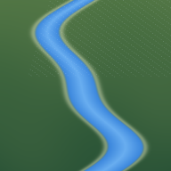
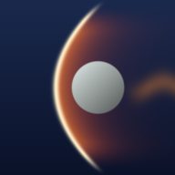
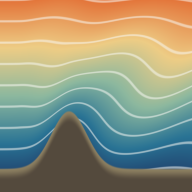

GPU fluid demos
Finite element solvers from ryujin, ported to WebGPU. They run entirely on your device's GPU.

Runoff
Flash floods on your GPU: ryujin shallow water in the browser.

Supersonic
Drag a cylinder through a Mach 3 stream: ryujin Euler in the browser.

Stratus
Wind over mountains you draw, in a stratified atmosphere: ryujin Euler with gravity.
Install on a phone: open an app, then on iPhone tap Share → Add to Home Screen; on Android tap the menu → Install app. It then opens full screen, like an app, and works offline.
Needs WebGPU: Chrome or Edge on Mac, Windows and Android; Safari on iOS/iPadOS 26 and macOS 26 or newer. On an older Mac, Safari can turn it on: Settings → Advanced → Show features for web developers, then Develop → Feature Flags → WebGPU.